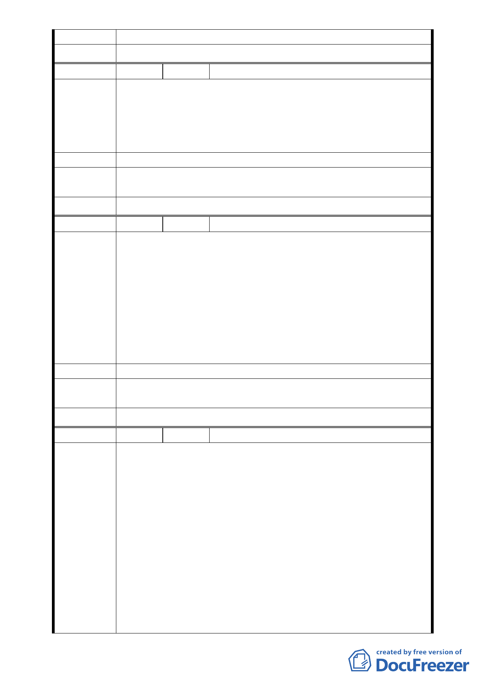

審查結論
委員會決議 本案主要計畫依市府所提修正後內容通過。
編 號 6 陳情人 林碧雲
我居在中行里已二十多年了，記得多年前有一次大雨釀成水
災，大水淹沒了房子，在沒有地方居住的狀況下，我跟許多人
陳 情 理 由 一起去山上慈惠堂躲避洪水。當時堂方不但不阻止我們這麼多
人上來避難，而且也安排了地方給我們居住，並且提供三餐給
我們吃。
建 議 辦 法 贊成本變更案。
專案小組
審 查 結 論 錄案供參。
委員會決議 本案主要計畫依市府所提修正後內容通過。
編 號 7 陳情人 黃美紅
每逢週休二日假期，我都會與家人朋友去住家附近的四獸山登
山健行，在健行完後便習慣至慈惠堂稍作休息並且享用堂方準
備的茶水，有次在休息過程中與堂方人員閒聊後才知道，原來
四獸山的優美環境都是由慈惠堂來維護管理，而且堂主也顧慮
陳 情 理 由 到登山客在山上活動的方便性，提供四獸山這一帶地區的水
電；原來慈惠堂所作公益活動如此的貼近社區，因此改變我原
本認為慈惠堂只會舉辦廟會活動的印象，所以我認為慈惠堂在
用地變更通過後，能為社區作的事情會更多更好，希望能儘快
通過此方案。
建 議 辦 法 贊成本變更案。
專案小組
審查結論
錄案供參。
委員會決議 本案主要計畫依市府所提修正後內容通過。
編 號 8 陳情人 吳笑輝
本人居住於慈惠堂知福德街將近廿年，覺得將該處土地劃為宗
教特定區刻不容緩：
（一） 將一切合法化後，主管機關（市政府）可要求該堂按照
水土保持法做好一切水保工作。
（二） 警方可儘速整頓附近交通攤販，使一切回歸法治面。
（三） 該堂之圖書館佔地廣大，藏書三萬餘冊，為附近里民之
陳情理由
閱讀場所。
（四） 星期例假日，各處之台北市民均來此登山踏青，利用該
堂之場所、停車場，政府更應早日將其合法化。
（五） 該廟宇提供公部門無法滿足之服務，且免費使用，全年
無休（如書法班、暑期少年營）。
（六） 該廟宇新年假期（農曆）提供有意義之花燈展覽、國樂
表演，爲市民提供一活動處所。
- 12 -